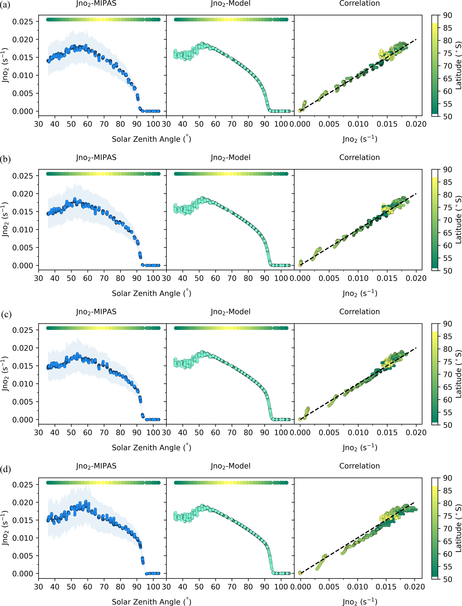

Nitrogen dioxide (NO₂) plays a central role in stratospheric chemistry, particularly in the catalytic destruction of ozone. Its photodissociation coefficient J(NO₂) governs the daytime diurnal variation of NOx and depends on solar zenith angle, altitude, and the local radiation environment — including surface albedo. Yet direct global measurements of J(NO₂) in the stratosphere are scarce.
I develop a novel method to infer J(NO₂) globally from simultaneous satellite measurements of NO, NO₂, O₃, and ClO from the Michelson Interferometer for Passive Atmospheric Sounding (MIPAS) on ESA's Envisat. Because NO and NO₂ rapidly exchange in sunlight, J(NO₂) can be derived under the steady-state assumption without direct radiation measurements. I apply this to 50°S–90°S in December at 20–40 km, spanning a wide range of solar zenith angles.
The derived J(NO₂) values are consistent with the TUV4.2 radiation model and show the expected dependence on solar zenith angle and a weak altitude dependence. A key finding is that J(NO₂) is elevated over the polar cap relative to lower latitudes — driven by the high reflectivity of ice and snow. This albedo enhancement of photolysis rates, which this satellite method captures quantitatively for the first time, has implications for polar stratospheric and tropospheric photochemistry.